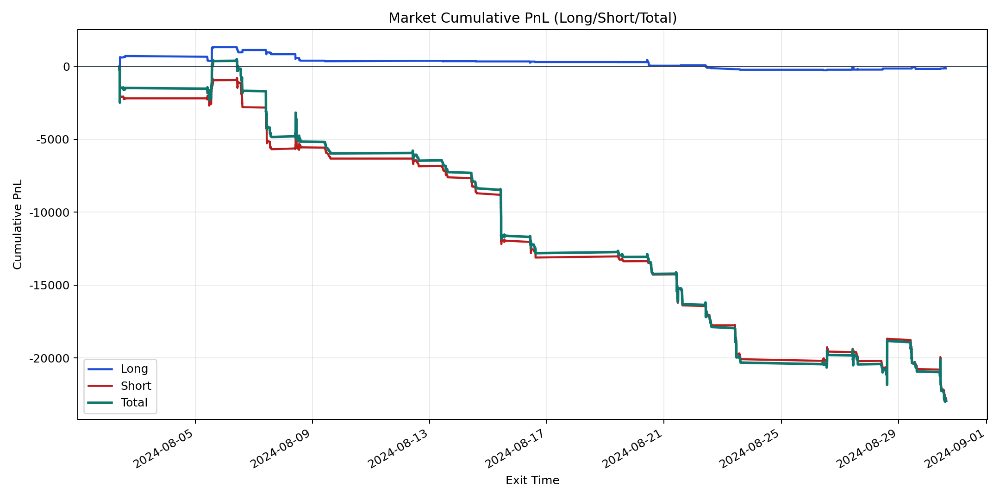
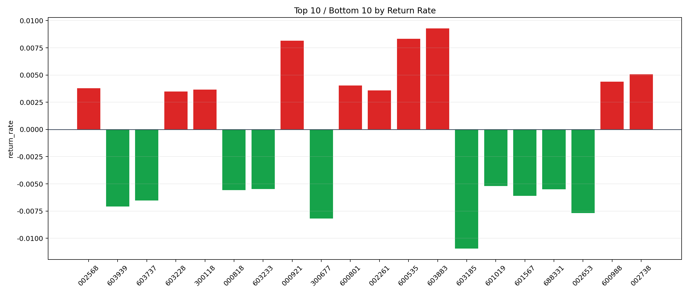

| repo_root | /home/haoranyou/data/output/alpha0.4_1w_5s_3ticks_index_filter/index_weights_500 |
|---|---|
| period_months | 1 |
| period_label | 2024-08-02_to_2024-08-30 |
| start_time | 2024-08-02 09:52:22 |
| end_time | 2024-08-30 14:59:55 |
| n_trades | 1865 |
| n_symbols | 132 |
| total_pnl | -22927.883799999996 |
| long_total_pnl | -137.68030000001204 |
| short_total_pnl | -22790.20349999998 |
| total_entry_notional | 17331958.0 |
| long_entry_notional | 1668627.0 |
| short_entry_notional | 15663331.0 |
| total_return_rate | -0.001322867491370565 |
| long_return_rate | -8.251113040842083e-05 |
| short_return_rate | -0.001455003632369129 |
| top_symbols_by_return | ["603883", "600535", "000921", "002738", "600988", "600801", "002568", "300118", "002261", "603228"] |
| bottom_symbols_by_return | ["603185", "300677", "002653", "603939", "603737", "601567", "000818", "688331", "603233", "601019"] |

